Prepare
Create and print your survey form.
Set the research title, instructions, and response scale, then download the form as an A4 PDF for printing.
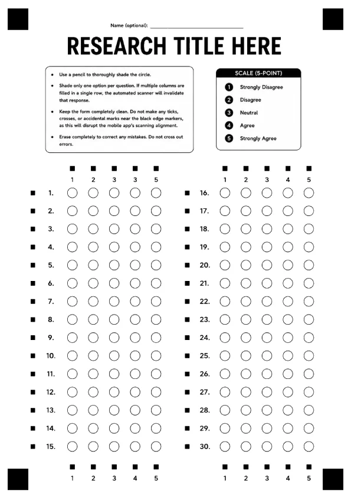
Paper survey scanner
Create and print a customized Likert-scale form, scan survey sheets, review the detected answers, and export the results to Word or Excel. All processing and storage remain on your device.
SEE HOW'S
About the system
Create the survey form, print it, scan each sheet, review the detected answers, and generate the final report.
Snapstat uses the form's corner markers, row markers, column markers, and calibration point to align the page and detect shaded responses.
View the SnapStat survey form ↗The workflow
Prepare
Set the research title, instructions, and response scale, then download the form as an A4 PDF for printing.

Capture
Keep all four corner markers visible and hold the phone steady while SnapStat reads the shaded responses directly on the device.
If the paper is misaligned or the phone moves too much, the scan will stop and ask the user to try again.
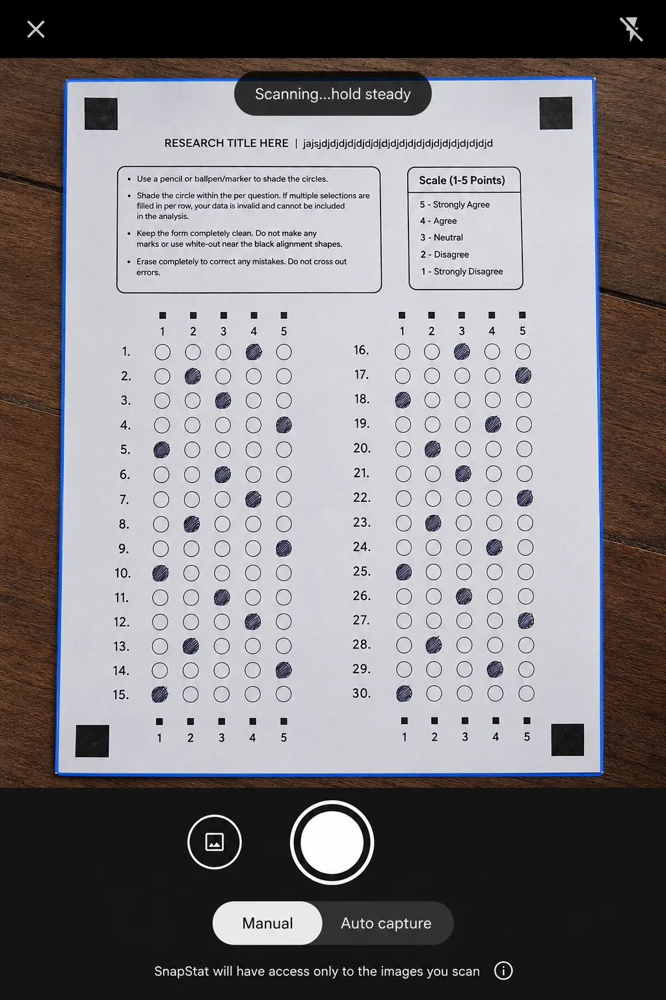
Review
Open previous scan sessions from history to view their results, download reports, or delete a session.
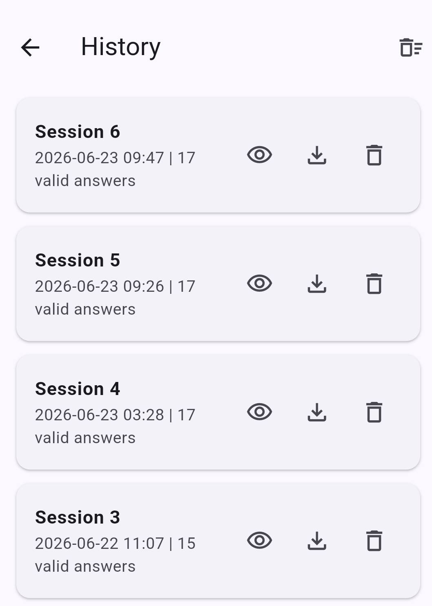
Report
View response total, percentages, the mean, standard deviation, and survey summary. Export the arranged results as a Word or Excel file.
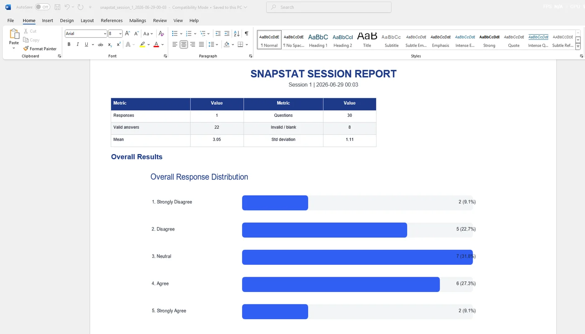
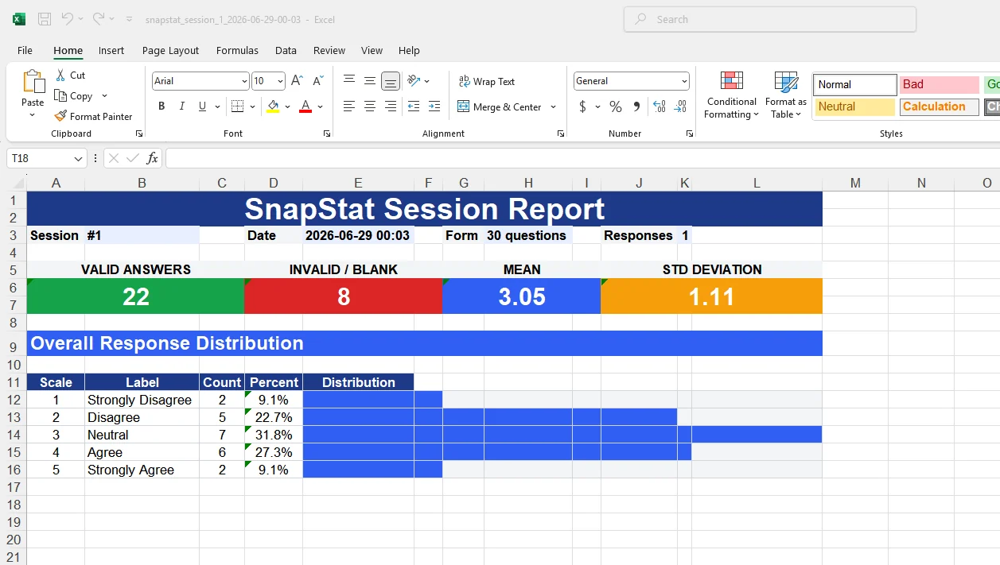
CUSTOMIZABLE SURVEY FORM
Edit the survey form before printing and preview exactly how it will appear on A4 paper.
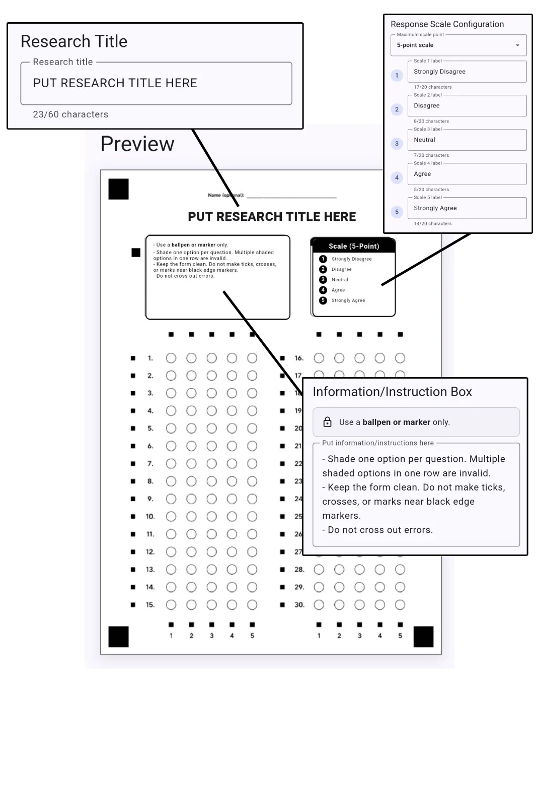
DESIGNED FOR ACCURATE SCANNING
The four corner squares define the page boundary. Row and column markers align the answer grid, while the calibration point helps SnapStat detect shaded circles consistently.
Capture guidance
Keep scrolling. Each scene shows one condition that helps the scanner read the form accurately.
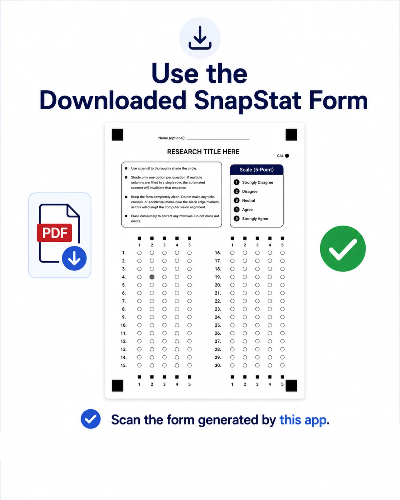
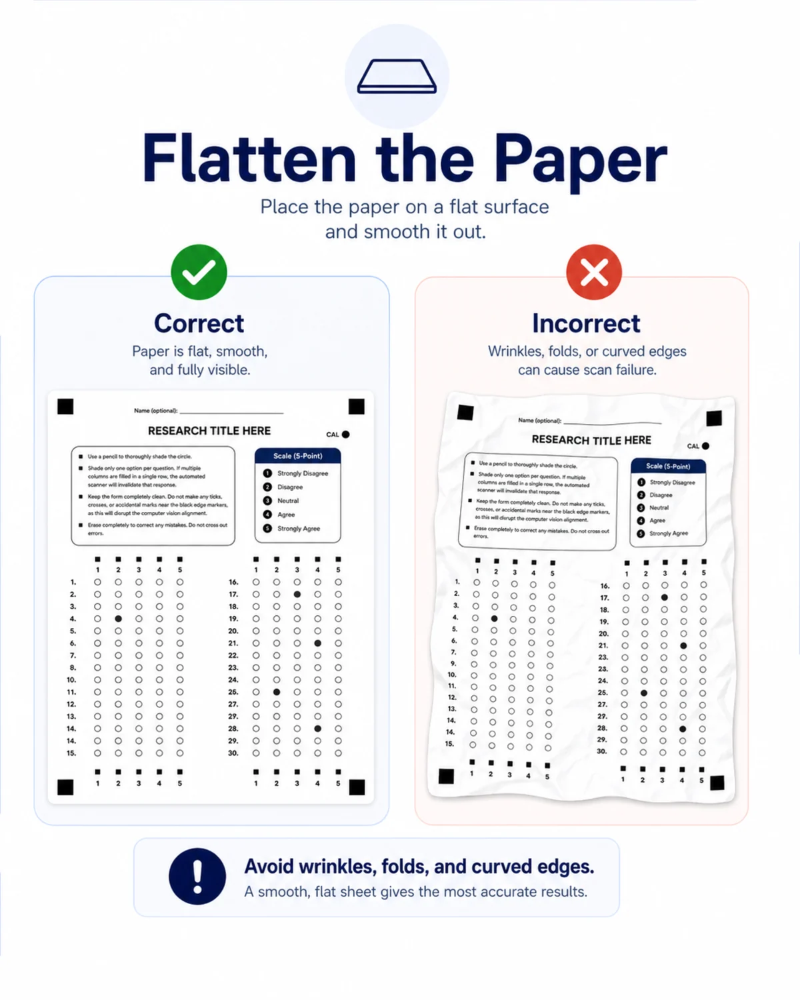
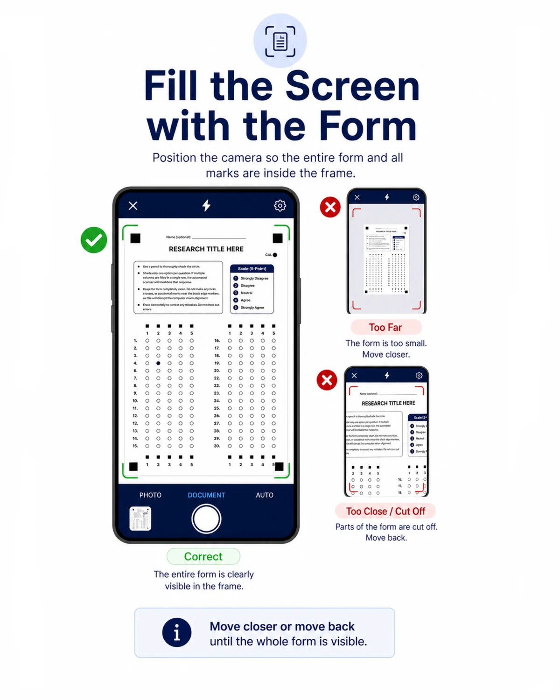
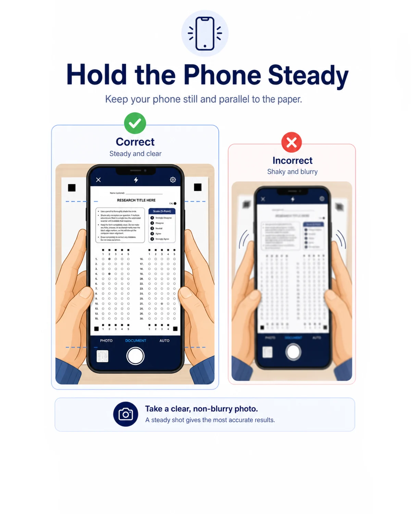
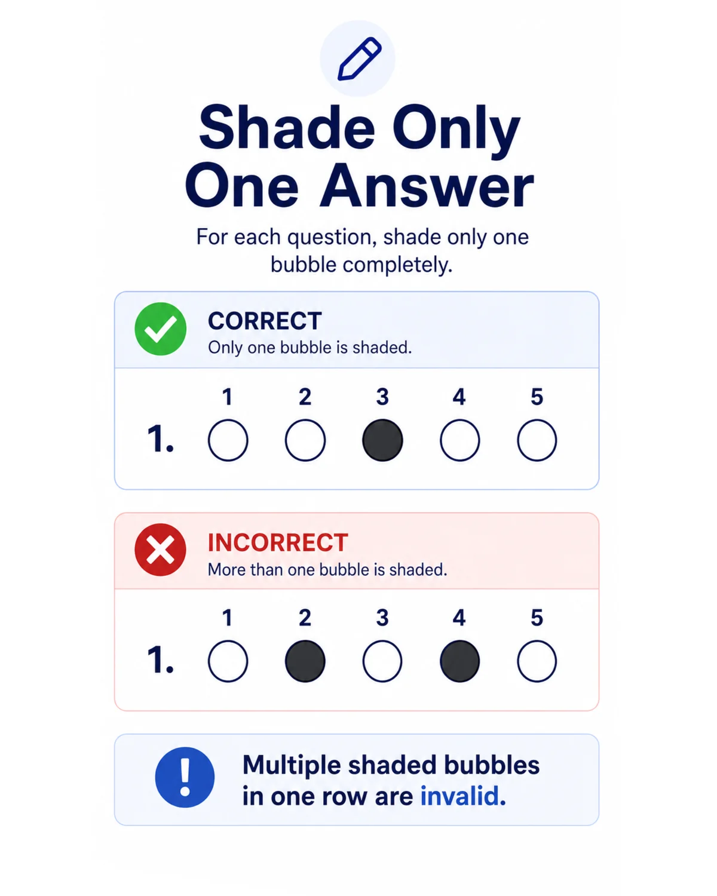
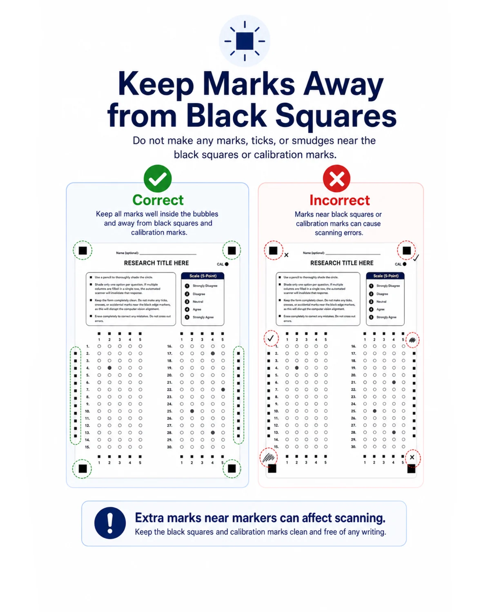
Local processing and storage
SnapStat processes scans, stores survey sessions, and generate reports locally on the phone. Nothing is uploaded unless the user chooses to export or share a file.
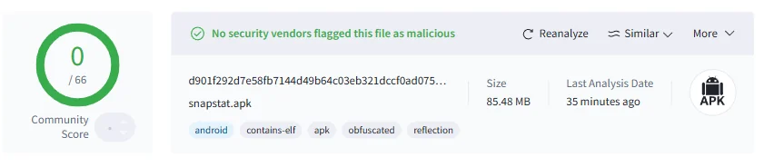
Download for android
Install SnapStat, supports Android 10 and newer. Scanning speed may vary depending on the phone.